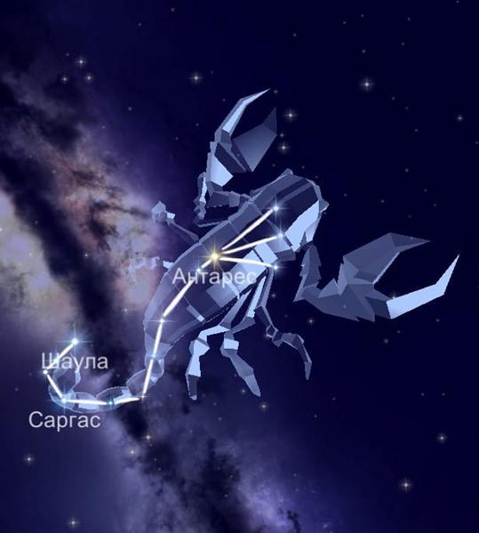

Данная область охватывает 497 квадратных градусов. Что, можно сказать, определяет его как не самое большое, но значительное по занимаемой площади. Яркие звезды Скорпиона служили ориентиром для наших предков.
Созвездие Скорпион граничит с Жертвенником и Змееносцем. Кроме того, лежит между Весами и Стрельцом. Также соседствует с Волком, Наугольником и Южной Короной.
Миф о происхождении.
Считается, что Скорпион изначально несет ответственность за гибель великого охотника Ориона. Согласно одним мифам, Скорпион ужалил Ориона в ответ на его хвастовство, что он может убить любую тварь. Скорпион был расположен на небе по другую сторону от Ориона во избежание дальнейших столкновений.
Звёзды, образующие созвездие Скорпион.
Альфа в созвездии Скорпиона — Антарес. Между прочим, её положение определяет сердце животного.
Бета — многократная группировка звёзд Акраб. Часто обозначает клешни скорпиона.
Лямбда — Шаула представляет собой систему с тремя видимыми звёздами. Лямбда подразумевает поднятый хвост.
Дельта — Джубба является светилом, имеющим спутник. В переводе означает лоб.
Тета относится к жёлтым гигантам.
Эпсилон — переменный гигант, а Каппа-Гиртаб это двойная звезда.
А вот, например, Пи, Ню и Кси Скорпиона являются многократными системами.
Йота выражена одной эволюционировавшейся звездой и сверхгигантом.
Сигма, как и многие в созвездии, целая система светил.
Так как на небе созвездие Скорпион располагается близко к центру нашей галактики, то оно находится без труда. Интересно, что Солнце проходит через него быстрее всех.Однако, лучшим временем для наблюдения считается май и июнь.
|

|